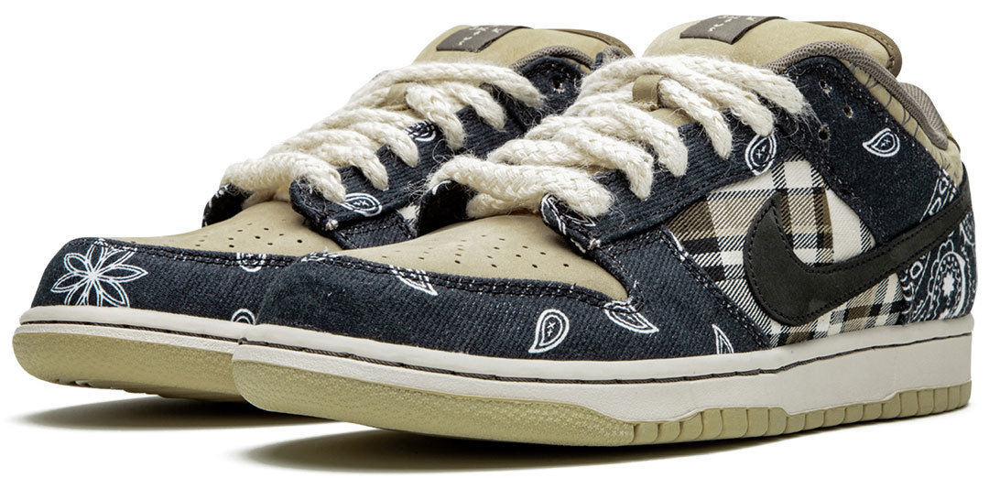

“Travis Scott se asoció con Nike para crear el Travis Scott x SB Dunk Low PRM QS 'Cactus Jack'. Con un diseño de patchwork, la parte superior del zapato emerge con una base de gamuza marrón acentuada por cuadros en el panel del cuarto y paisley en las superposiciones. Las superposiciones están diseñadas para desgastarse y revelar un estampado de elefante, mientras que el Swoosh lateral tiene un acabado rosa. La marca Cactus Jack emerge en la etiqueta de la lengüeta, mientras que se incluye una suela de goma para brindar tracción.
